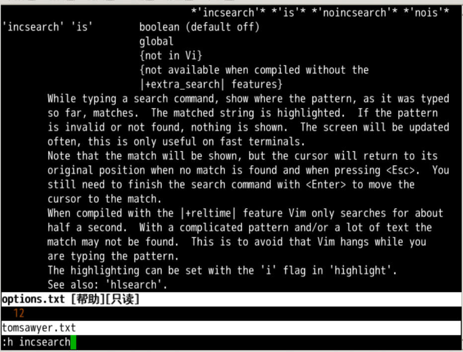
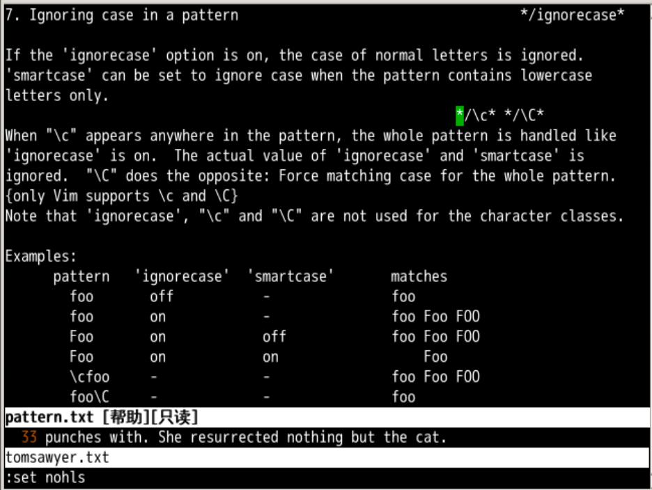
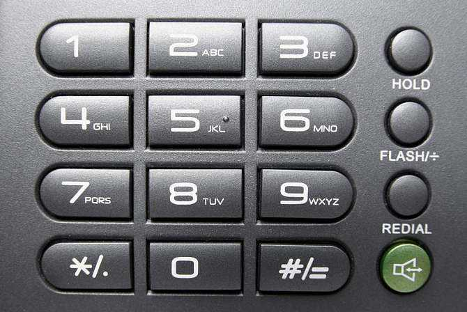
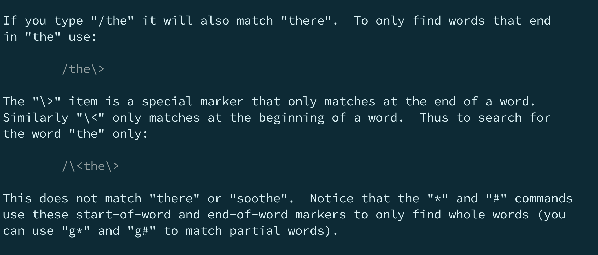

查找进阶
回忆上节课内容🤔
- 上次是搜索，是全文搜索
- 和我们以前的行内有点像
- / 正向，？ 反向
- n 保持方向，N 改变方向
hls让搜索结果高亮wrapscan可以从头搜索noh取消本次高亮
实时搜索
:set incsearch- 实时匹配搜索输入
:set noincsearch- 不实时匹配搜索输入

大写小写
- 如果查找要忽略大小写的话
- 就用
ignorecase :set ignorecase- 简写为
:se ic - 取消为
:se noic
- 就用
:se ic可以和:set smartcase智慧大小写配合- 如果搜索模式里面有
大写字母就完全匹配 - 如果没有
大写字母就忽略大小写
- 如果搜索模式里面有
- 还可以直接在搜索项里加开关
/oeasy\c不区分大小写的oeasy/oeasy\C区分大小写的oeasy- 具体可以
:h ignorecase

查找当前
- 如果我们在一个单词上面的时候
- 按下 *
- 就是查找当前光标所在的单词
- 这很适合查找某个函数名
- 或者查找变量名的引用
- 继续遍历搜索
- n 保持方向
- N 改变方向
- #
- 向上进行查找
- *、#
- 刚好是电话按键中的对称两个

明确头尾的单词
- 如果我查找的是
/asas符合要求ask符合要求has也符号要求oeasy都符合要求
- 要以
as为单词结尾/as\>as符合has符合
- 要以
as为单词开头/\<asas符合ask符合
- 我们就要
as这个单词/\<as\>- 只有
as符合

快速不按单词查找
- 如果我们使用 * 的话
- 是按照整个单词查找的
- 比如放到
as的a上 - 就是说查到的一定得是个完整单词
/\<as\>
- 如何不按照单词查找呢？
- 比如放到
as的a上， - g*、g#进行查找
- 只要有
as就算
- 比如放到
oeasy也符合要求

设置 vim
- 如果关于搜索高亮的这些设置你想每次打开
vim就设置好 - 那需要设置当前用户的vim配置文件
vi ~/.vimrc - G 到文件的尾部
- o 在下面新建一行
set hlsearch设置搜索高亮set wrapscan设置从头搜索- 然后重启这些配置就永远保存在你这个当前用户的
vim里面了 - 当然，如果是实验楼重启新环境的话会消失
总结
- 实时搜索
:set incsearch
- 大写小写
ignorecase
- 查找当前单词
- * 正向按单词完全匹配
- # 反向按单词完全匹配
- g* 正向不按单词匹配
-
g# 反向不按单词匹配
-
继续查找
- n保持方向
- N改变方向
-
这个搜索可以做一些模糊匹配吗？
- 下次再说吧 👋